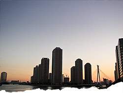

 image: up2u“今年も蕎麦が食べられるなぁ”
大きく息を吸い込んで、吐き出した。口を「あ」の発音をするときのように広げたから、少し白い気体が出た。
永代橋[1]の上で夕日を撮る為にやってきた。大晦日だけど車はひっきりなしに橋の上を駆け抜けていく。僕は自分なりのシャッターチャンスを狙っていた。夕日が超高層ビルの陰に隠れて空の下を朱に染める。空の上は夜の帳を引く準備をしている。いい頃合だと思い、デジカメのシャッターを切った。佃島に聳え立つ高層ビル群がいい具合にシルエットになり、夕日の朱が映える。
冬の風は、排気ガスの臭い、冬の冷たさ、クラクションの音、誰かの笑い声、犬の鳴き声、飛行機の音、潮の匂い……、なんでも運んできた。
はっきりとは分からないが、ぽつぽつとビルに明かりが灯り始めた。
僕の後ろを老いた夫婦がゆっくりと通り過ぎる。スーパーの袋を提げてカシャカシャと音を立て、「寒いなぁ。早く帰ろう」「そうですねぇ」「今年も蕎麦[2]が食べられるなぁ」「早くしないと紅白が始まりますよ」と、そんな内容だったと思う。
後ろ姿を見ると背を丸めてすこし早歩きで歩いていた。
僕は、ゆっくりと水天宮の方へ歩き始めた。水天宮の交差点に差し掛かった時、人形焼[3]の店の明かりが見えた。無性に人形焼が食べたくなり少し多めに買い求めた。
折よく、携帯電話が鳴った。母からだ。
「いまどこにいるの？ 今日は家で蕎麦食べるんでしょう？」
「うん。今から帰るよ」
「早く帰ってらっしゃい」
「わかった。ああ、それと……」
「なに？」
「……ううん。なんでもない。じゃ切るよ」
僕は、水天宮駅の地下入り口の階段を駆け下りていった。
referenced works
- 永代橋：歴史は古く、架橋は1698年と言われ、江戸時代初期にまでさかのぼる。永代とは、長い年月、永久、とこしえ、という意味であり、「ひととき」とまったく異なる時間単位である。現在の橋は、大正15年に完成。2007年には、勝鬨橋、清洲橋とともに、国の重要文化財に指定された。 ↩
- 蕎麦：晦日とは、月末の30日を意味する。大晦日とは、最後の月末、すなわち年末を意味する。その大晦日の夜に年越し蕎麦を食べるという風習は、日本全国に見られる。細く長い蕎麦の形状に由来し、細くとも長く元気に生き延びることを願って食される。太く短い人生を望む者は、食してはならない。 ↩
- 人形焼：中央区の人形町が発祥と言われ、七福神などの形をしている。皮の中にはたっぷりの餡が入っている。面白いことに、七福神といいながら、大概の店のものは、六福神になっている。七福神とは、恵比寿、大黒、毘沙門、弁財、福禄寿、寿老人、布袋の7柱である。それぞれの店で、どの神が抜けているか探してみるのも面白い。 ↩
location information
- 場所: 中央区新川一丁目の永代橋の上
- 時間: 夕方
- 緯度: 35.676437
- 経度: 139.787292
- 地図: Google Maps
016 “ポツンと東京を見下ろすその姿は気高く、とても真摯だ。”
015 “光に彩られて先輩の横顔が、綺麗に染まる.。”
014 “悲しくて歩けないという気持ちを初めて知った夜”
013 “私たちの声だけが静かに揺れた”
012 “細くぐるりと指を囲む、日焼けをしていない左手の薬指の根元”
011 “涙を流しながら煙を吐く彼の隣”
010 “幼い耳には雑音にしか聴こえない音楽に興味が湧いた”
009 “今年も蕎麦が食べられるなぁ”
008 “お堀に映った月をみんなで見てる”
007 “バッグの中だけがつめたいまま”
006 “ほぼ満員の客がざわざわと寿司を食らっている”
005 “向かい合って、仁王立ち”
004 “なんでもないたった6畳の白い部屋”
003 “昔の彼女がスーツを着てモデルをしてた”
002 “電車が悪いんです”
001 “どこで彼女とセックスをするのかは、東京の子供にとっては問題です”

Write for Us!
広い東京の中に、あなたの思い出を刻んでみませんか？ あの日、あの場所で体験した、あの出来事。あなたにとって忘れられない思い出を、短い物語にして送ってください。
commentary